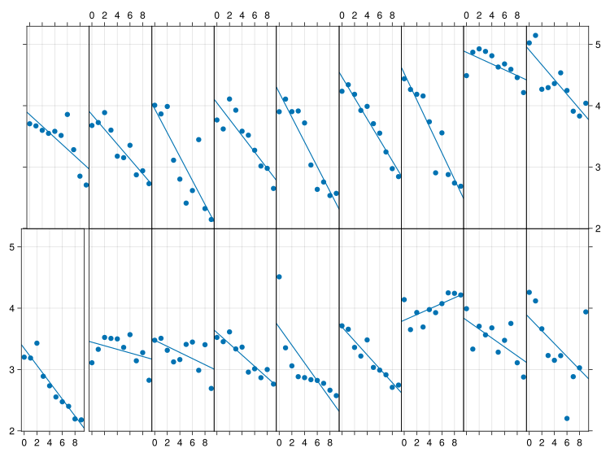
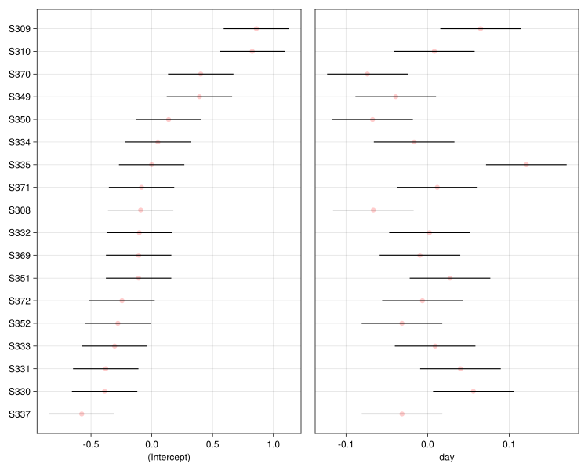

Belenky et al. (2003) reported effects of sleep deprivation across a 14-day study of 30-to-40-year old men and women holding commercial vehicle driving licenses. Their analyses are based on a subset of tasks and ratings from very large and comprehensive test and questionnaire battery (Balkin et al., 2000).
Initially 66 subjects were assigned to one of four time-in-bed (TIB) groups with 9 hours (22:00-07:00) of sleep augmentation or 7 hours (24:00-07:00), 5 hours (02:00-07:00), and 3 hours (04:00-0:00) of sleep restrictions per night, respectively. The final sample comprised 56 subjects. The Psychomotor Vigilance Test (PVT) measures simple reaction time to a visual stimulus, presented approximately 10 times ⁄ minute (interstimulus interval varied from 2 to 10 s in 2-s increments) for 10 min and implemented in a thumb-operated, hand-held device (Dinges & Powell, 1985).
1.1 Design
The study comprised 2 training days (T1, T2), one day with baseline measures (B), seven days with sleep deprivation (E1 to E7), and four recovery days (R1 to R4). T1 and T2 were devoted to training on the performance tests and familiarization with study procedures. PVT baseline testing commenced on the morning of the third day (B) and testing continued for the duration of the study (E1–E7, R1–R3; no measures were taken on R4). Bed times during T, B, and R days were 8 hours (23:00-07:00).
1.2 Test schedule within days
The PVT (along with the Stanford Sleepiness Scale) was administered as a battery four times per day (09:00, 12:00, 15:00, and 21:00 h); the battery included other tests not reported here (see Balkin et al., 2000). The sleep latency test was administered at 09:40 and 15:30 h for all groups. Subjects in the 3- and 5-h TIB groups performed an additional battery at 00:00 h and 02:00 h to occupy their additional time awake. The PVT and SSS were administered in this battery; however, as data from the 00:00 and 02:00 h sessions were not common to all TIB groups, these data were not included in the statistical analyses reported in the paper.
1.3 Statistical analyses
The authors analyzed response speed, that is (1/RT)*1000 – completely warranted according to a Box-Cox check of the current data – with mixed-model ANOVAs using group as between- and day as within-subject factors. The ANOVA was followed up with simple tests of the design effects implemented over days for each of the four groups.
1.4 Current data
The current data distributed with the RData collection is attributed to the 3-hour TIB group, but the means do not agree at all with those reported for this group in (Belenky et al., 2003, fig. 3) where the 3-hour TIB group is also based on only 13 (not 18) subjects. Specifically, the current data show a much smaller slow-down of response speed across E1 to E7 and do not reflect the recovery during R1 to R3. The currrent data also cover only 10 not 11 days, but it looks like only R3 is missing. The closest match of the current means was with the average of the 3-hour and 7-hour TIB groups; if only males were included, this would amount to 18 subjects. (This conjecture is based only on visual inspection of graphs.)
2 Setup
First we attach the various packages needed, define a few helper functions, read the data, and get everything in the desired shape.
Code
usingCairoMakie # device driver for static (SVG, PDF, PNG) plotsusingChain # like pipes but cleanerusingDataFrameMacrosusingDataFramesusingMixedModelsusingMixedModelsMakie # plots specific to mixed-effects models using MakieusingProgressMeterCairoMakie.activate!(; type="svg")ProgressMeter.ijulia_behavior(:clear);
3 Preprocessing
The sleepstudy data are one of the datasets available with recent versions of the MixedModels package. We carry out some preprocessing to have the dataframe in the desired shape:
Capitalize random factor Subj
Compute speed as an alternative dependent variable from reaction, warranted by a ‘boxcox’ check of residuals.
Create a GroupedDataFrame by levels of Subj (the original dataframe is available as gdf.parent, which we name df)
gdf =@chain MixedModels.dataset(:sleepstudy) begin DataFramerename!(:subj =>:Subj, :days =>:day)@transform!(:speed =1000/:reaction)groupby(:Subj)end
GroupedDataFrame with 18 groups based on key: Subj
First Group (10 rows): Subj = "S308"
Row
Subj
day
reaction
speed
String
Int8
Float64
Float64
1
S308
0
249.56
4.00705
2
S308
1
258.705
3.86541
3
S308
2
250.801
3.98723
4
S308
3
321.44
3.111
5
S308
4
356.852
2.80228
6
S308
5
414.69
2.41144
7
S308
6
382.204
2.61641
8
S308
7
290.149
3.44651
9
S308
8
430.585
2.32242
10
S308
9
466.353
2.1443
⋮
Last Group (10 rows): Subj = "S372"
Row
Subj
day
reaction
speed
String
Int8
Float64
Float64
1
S372
0
269.412
3.71179
2
S372
1
273.474
3.65665
3
S372
2
297.597
3.36025
4
S372
3
310.632
3.21925
5
S372
4
287.173
3.48223
6
S372
5
329.608
3.03391
7
S372
6
334.482
2.9897
8
S372
7
343.22
2.91358
9
S372
8
369.142
2.70899
10
S372
9
364.124
2.74632
df = gdf.parentdescribe(df)
4×7 DataFrame
Row
variable
mean
min
median
max
nmissing
eltype
Symbol
Union…
Any
Union…
Any
Int64
DataType
1
Subj
S308
S372
0
String
2
day
4.5
0
4.5
9
0
Int8
3
reaction
298.508
194.332
288.651
466.353
0
Float64
4
speed
3.46634
2.1443
3.46443
5.14583
0
Float64
4 Estimates for pooled data
In the first analysis we ignore the dependency of observations due to repeated measures from the same subjects. We pool all the data and estimate the regression of 180 speed scores on the nine days of the experiment.
pooledcoef =simplelinreg(df.day, df.speed) # produces a Tuple
(3.965811974783146, -0.1109935923219964)
5 Within-subject effects
In the second analysis we estimate coefficients for each Subj without regard of the information available from the complete set of data. We do not “borrow strength” to adjust for differences due to between-Subj variability and due to being far from the population mean.
5.1 Within-subject simple regressions
Applying combine to a grouped data frame like gdf produces a DataFrame with a row for each group. The permutation ord provides an ordering for the groups by increasing intercept (predicted response at day 0).
within =combine(gdf, [:day, :speed] => simplelinreg =>:coef)
18×2 DataFrame
Row
Subj
coef
String
Tuple…
1
S308
(3.94806, -0.194812)
2
S309
(4.87022, -0.0475185)
3
S310
(4.90606, -0.120054)
4
S330
(3.4449, -0.0291309)
5
S331
(3.47647, -0.0498047)
6
S332
(3.84436, -0.105511)
7
S333
(3.60159, -0.0917378)
8
S334
(4.04528, -0.133527)
9
S335
(3.80451, 0.0455771)
10
S337
(3.34374, -0.137744)
11
S349
(4.46855, -0.170885)
12
S350
(4.21414, -0.20151)
13
S351
(3.80469, -0.0728582)
14
S352
(3.68634, -0.144957)
15
S369
(3.85384, -0.120531)
16
S370
(4.52679, -0.215965)
17
S371
(3.853, -0.0936243)
18
S372
(3.69208, -0.113292)
Figure 1 shows the reaction speed versus days of sleep deprivation by subject. The panels are arranged by increasing initial reaction speed starting at the lower left and proceeding across rows.
Code
let ord =sortperm(first.(within.coef)) labs =values(only.(keys(gdf)))[ord] # labels for panels f =clevelandaxes!(Figure(; resolution=(1000, 750)), labs, (2, 9))for (axs, sdf) inzip(f.content, gdf[ord]) # iterate over the panels and groupsscatter!(axs, sdf.day, sdf.speed) # add the points coef =simplelinreg(sdf.day, sdf.speed)abline!(axs, first(coef), last(coef)) # add the regression lineend fend
┌ Warning: abline! is deprecated and will be removed in the future. Use ablines / ablines! instead.
│ caller = top-level scope at In[7]:8
└ @ Core ./In[7]:8

Figure 1: Reaction speed (s⁻¹) versus days of sleep deprivation by subject
6 Basic LMM
contrasts =Dict(:Subj =>Grouping())m1 =let form =@formula speed ~1+ day + (1+ day | Subj)fit(MixedModel, form, df; contrasts)end
Est.
SE
z
p
σ_Subj
(Intercept)
3.9658
0.1056
37.55
<1e-99
0.4190
day
-0.1110
0.0151
-7.37
<1e-12
0.0566
Residual
0.2698
This model includes fixed effects for the intercept which estimates the average speed on the baseline day of the experiment prior to sleep deprivation, and the slowing per day of sleep deprivation. In this case about -0.11/second.
The random effects represent shifts from the typical behavior for each subject.The shift in the intercept has a standard deviation of about 0.42/s.
The within-subject correlation of the random effects for intercept and slope is small, -0.18, indicating that a simpler model with a correlation parameter (CP) forced to/ assumed to be zero may be sufficient.
7 No correlation parameter: zcp LMM
The zerocorr function applied to a random-effects term estimates one parameter less than LMM m1– the CP is now fixed to zero.
m2 =let form =@formula speed ~1+ day +zerocorr(1+ day | Subj)fit(MixedModel, form, df; contrasts)end
Est.
SE
z
p
σ_Subj
(Intercept)
3.9658
0.1033
38.38
<1e-99
0.4085
day
-0.1110
0.0147
-7.53
<1e-13
0.0550
Residual
0.2706
LMM m2 has a slghtly lower log-likelihood than LMM m1 but also one fewer parameters. A likelihood-ratio test is used to compare these nested models.
Code
MixedModels.likelihoodratiotest(m2, m1)
model-dof
deviance
χ²
χ²-dof
P(>χ²)
speed ~ 1 + day + zerocorr(1 + day | Subj)
5
125
speed ~ 1 + day + (1 + day | Subj)
6
125
0
1
0.5192
Alternatively, the AIC, AICc, and BIC values can be compared. They are on a scale where “smaller is better”. All three model-fit statistics prefer the zcpLMM m2.
The third set of estimates are their conditional modes. They represent a compromise between their own data and the model parameters. When distributional assumptions hold, predictions based on these estimates are more accurate than either the pooled or the within-subject estimates. Here we “borrow strength” to improve the accuracy of prediction.
9 Caterpillar plots (effect profiles)
Code
caterpillar(m2)

Figure 2: Prediction intervals on the random effects in model m2
Figure 3: Shrinkage plot of the means of the random effects in model m2
11 References
Balkin, T., Thome, D., Sing, H., Thomas, M., Redmond, D., Wesensten, N., Williams, J., Hall, S., & Belenky, G. (2000). Effects of sleep schedules on commercial motor vehicle driver performance (DOT-MC-00-133). Federal Motor Carrier Safety Administration. https://doi.org/10.21949/1503015.
Belenky, G., Wesensten, N. J., Thorne, D. R., Thomas, M. L., Sing, H. C., Redmond, D. P., Russo, M. B., & Balkin, T. J. (2003). Patterns of performance degradation and restoration during sleep restriction and subsequent recovery: A sleep dose-response study. Journal of Sleep Research, 12(1), 1–12. https://doi.org/10.1046/j.1365-2869.2003.00337.x
Dinges, D. F., & Powell, J. W. (1985). Microcomputer analyses of performance on a portable, simple visual RT task during sustained operations. Behavior Research Methods, Instruments, and Computers, 17(6), 652–655. https://doi.org/10.3758/bf03200977